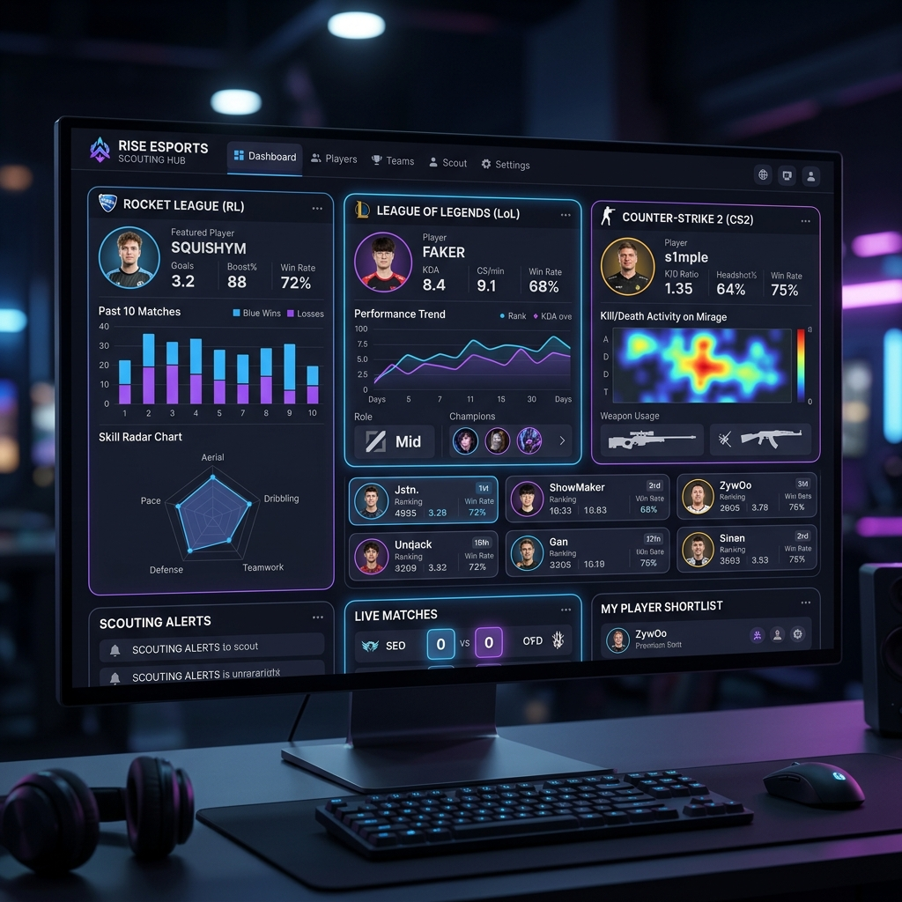
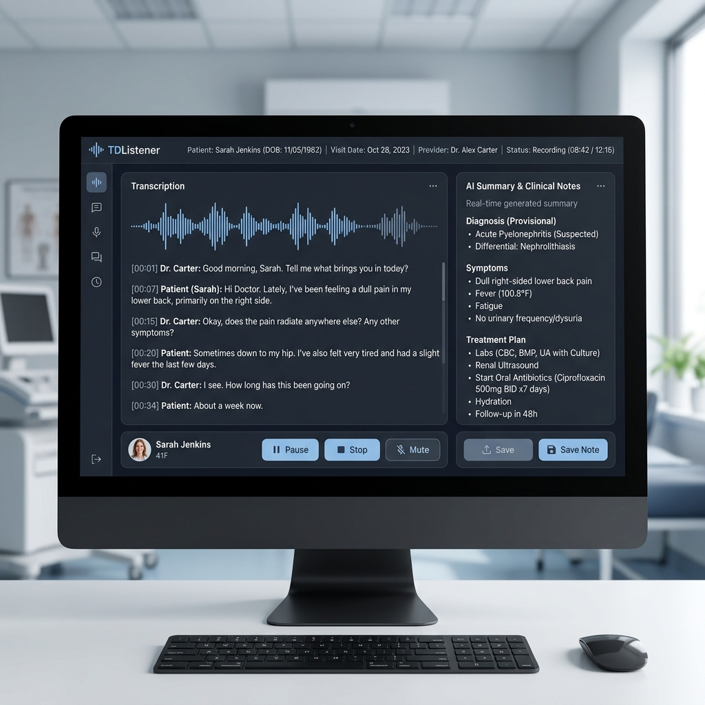
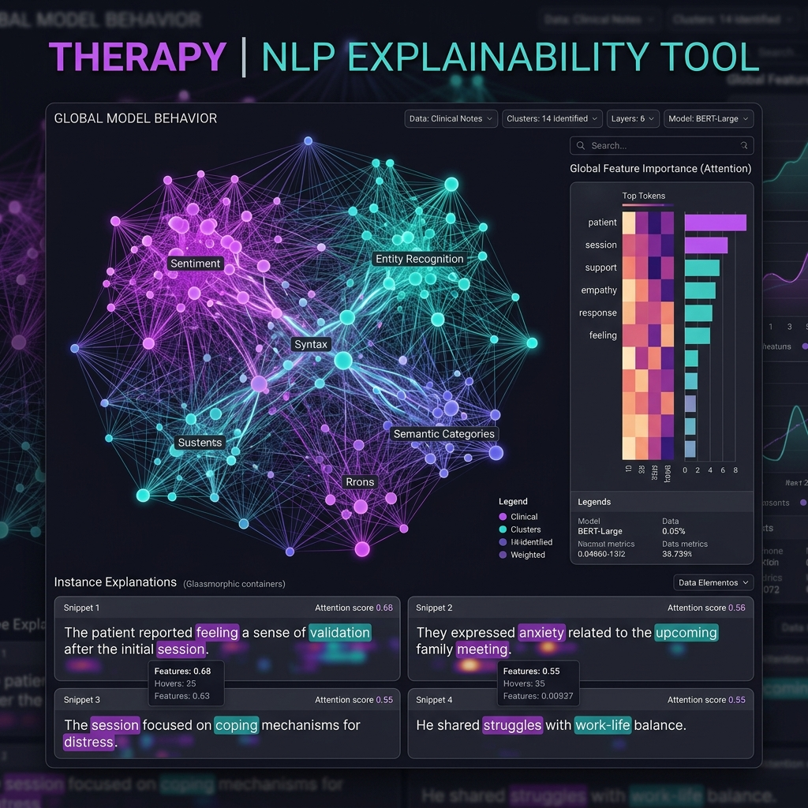
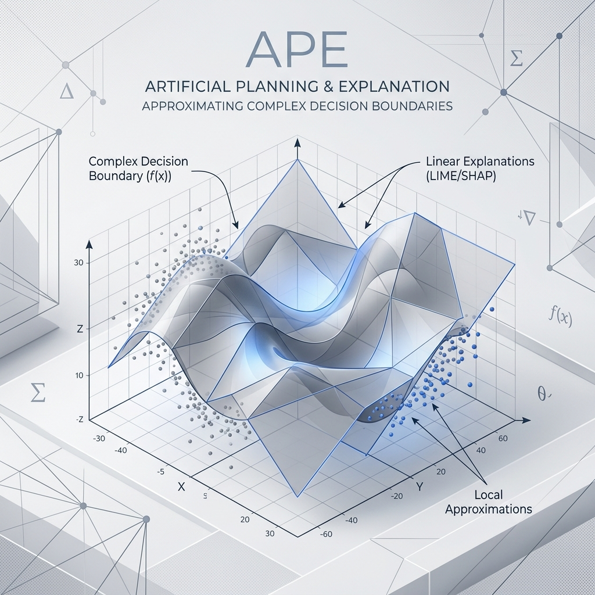
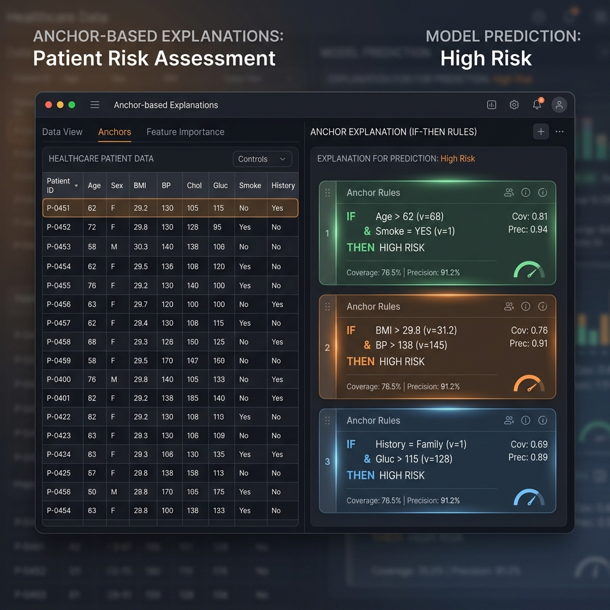
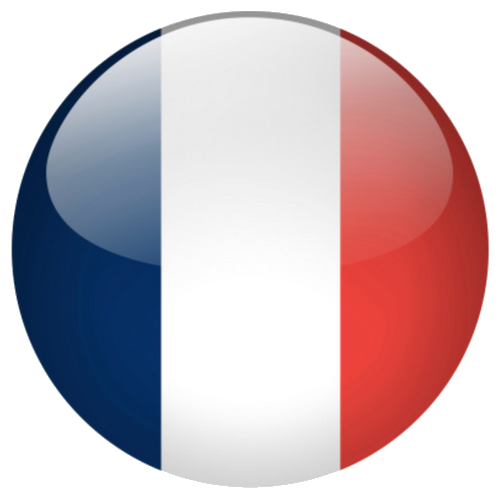

Latest News
August 2025: Published "Impact of Explanation Techniques..." at CSCW 2025 — a top venue for HCI research.
March 2025: Published "Evaluating the Effectiveness of LLMs in Converting Clinical Data to FHIR Format" in Applied Sciences MDPI.
February 2025: Collaborative work with MLCommons available on arXiv, assessing LLM safety.
December 2024: "Predicting Diagnostics in Cardiology Using LLMs" published in Applied Sciences MDPI.
May 2024: Presented at XAI4U event dedicated to XAI for end-users.
December 2023: Successfully defended my PhD thesis at Inria Rennes.
About Me
I am a researcher and engineer dedicated to the intersection of Explainable AI (XAI), Natural Language Processing (NLP), and Human-Computer Interaction (HCI). I earned my PhD from Inria Rennes, where my research focused on the design and evaluation of explanation techniques to enhance user comprehension and confidence in complex machine learning models. My doctoral work specifically explored how the representation and technique of explanations affect human trust and decision-making in high-stakes environments.
In my current role as a Senior AI Developer at Top Doctors in Barcelona, I lead the integration of Large Language Models (LLMs) into clinical workflows. My work involves developing robust systems for clinical data structured extraction, automated diagnostic assistance, and patient-facing AI tools that prioritize transparency and reliability. I bridge the gap between cutting-edge research and production-ready healthcare applications, ensuring that AI solutions are both technically sound and ethically grounded.
Beyond technical implementation, I am deeply interested in how humans perceive and interact with AI. I strive to build systems that don't just provide answers, but offer meaningful insights, ensuring that AI remains a supportive and understandable tool for both professionals and the general public. Whether it's through multi-modal interfaces or innovative explanation frameworks, my goal is to create AI that empowers users rather than obscures the truth.
Work Experience
Researcher in NLP & AI @ Top Doctors
2024 - Present | Barcelona, Spain
Developing chatbots to empower patients in specialist discovery and providing intuitive AI explanations for healthcare professionals. Leading LLM integration for clinical workflows.
PhD Researcher in Explainable AI @ Inria
2020 - 2024 | Rennes, France
Supervised by Christine Largouët. Researched user comprehension and trust in AI. Developed methods for linear and global explainability in NLP models.
Visiting Researcher @ Aalborg University
2023 | Aalborg, Denmark
Collaborated on human-centered XAI and moral manifestations in LLMs with the HCI group.
Research Intern @ Inria Rennes / LIRIS
2019 - 2020 | France
Focused on mining intuitive referring expressions and improving model transparency.
Selected Publications
Loading publications... 📡
Teaching
M1 Level – ISTIC, Rennes 1 University
Taught time series analysis (AR models, exponential smoothing) and supervised house price prediction competitions.
M1 Level – Institut Agro Rennes
Hands-on Python workshops using scikit-learn, numpy, and pandas for real-world data science projects.
M2 Level – ENSAI
Deep learning fundamentals for tabular and image data, including CV projects like dog vs. cat classification.
M2 Level – ISTIC, Rennes 1 University
Evaluated student reports and oral presentations on emerging technologies and scientific trends.
L3 Level – ENSAI
Specialized Excel and LaTeX training for professional statisticians across multiple groups.
L2 Level – ISTIC, Rennes 1 University
Core OOP concepts, inheritance, and data structures. Developed a Tower Defense game as a final project.
🤖 Featured Projects
A selection of my work in Medical AI, Explainable Machine Learning, and Data Infrastructure.

NanoRank: Esports Scouting Application
An application for scouting players in competitive games like Rocket League, League of Legends, and Counter-Strike. Built for the Nanocorp ecosystem to analyze player performance and potential.

TDListener: A Medical AI Scribe
A tool that leverages AI to automatically transcribe and summarize medical consultations, freeing up doctors to focus on their patients. It processes clinical audio into structured SOAP notes.
Global: Shared Data Space for Clinical and Hospitals
A secure and collaborative platform for sharing clinical and hospital data, designed to accelerate research and improve patient care through interoperable FHIR standards.

Therapy: Global Explainability of NLP Models
This project introduces a method for generating global explanations for NLP models through a cooperative generation process. It helps in understanding the overall behavior of complex models.

APE: When Should We Use Linear Explanations?
Investigates the suitability of linear explanation models for different ML models and data instances, providing practical guidance for model interpretability.

Improving Anchor-based Explanations
Enhancing Anchor-based XAI by improving tabular data discretization and extending search space for more robust textual explanations.
Contact
📍 Barcelona, Spain
Education
Inria Rennes - Rennes 1 University (2020 - 2023)
XAI, NLP, User Studies. Defended Dec 2023.
Rennes 1 University (2019 - 2020)
Sherbrooke University, Canada (2018 - 2019)
Supervision
Mentoring of Jacques Lacourt, a final year trainee at Centrale Marseille.
Organisation Member
Student volunteer for the BDA conference (Rennes, France).
Member of the Organisation committee of the PhD student day of the IRISA laboratory (Rennes, France).
Data Knowledge Management Seminars (Inria).
Centre Committee Representative (Inria).
Skills
XAI, NLP, LLMs, Scikit-learn, PyTorch
Python, JavaScript, SQL, Git
Languages

French (Native)English (Fluent)
Spanish (Professional)